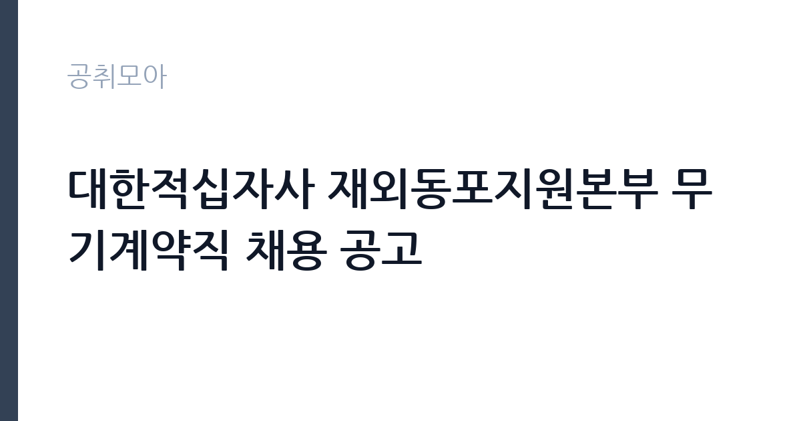

[공공기관] 대한적십자사 재외동포지원본부 무기계약직 채용 공고
대한적십자사 · 서울 · 마감 2026-11-26 (D-42) · 출처 잡알리오

한눈에 보는 모집 조건
| 기관 | 대한적십자사 |
|---|---|
| 공고명 | 대한적십자사 재외동포지원본부 무기계약직 채용 공고 |
| 고용형태 | 공무직 |
| 근무지 | 서울 |
| 게시일 | 2026-10-16 |
| 마감일 | 2026-11-26 (D-42) |
지원자격, 이렇게 읽으세요
- 공공기관 채용공시
- 세부 조건은 원문 공고문 확인
필수자격은 국가기술자격법시행규칙 별표의 사무 분야 자격증 소지입니다. 비서 1급부터 3급, 워드프로세서, 컴퓨터활용능력 1급과 2급, 한글속기 1급과 2급 중 1개 이상을 갖고 있으면 지원할 수 있습니다. 공통자격으로는 병역의무 불이행자가 아닐 것과 임용일 기준 만 60세 미만, 결격사유 부재가 있으며 임용 예정일부터 근무가 가능해야 합니다. 자격증 가짓수보다 실무 활용도를 묻는 구조이므로 보유 자격의 취득 과정과 활용 경험을 정리해 두시기 바랍니다.
이 공고의 포인트
이 공고의 매력은 무기계약직이라는 고용 안정성과 한 달이 넘는 여유 있는 접수 기간입니다. 재외동포지원본부는 원폭피해자와 사할린동포 등 재외동포 지원 사업을 맡는 조직이라 공공성과 인도주의 가치가 분명한 일터입니다. 서울 근무로 통근 접근성이 좋고 임용일이 12월 1일로 정해져 있어 연말 이직을 계획하는 분께 일정이 맞습니다. 사무 자격증 하나로 도전할 수 있어 진입 문턱도 낮은 편입니다.
전형은 어떻게 진행되나
접수는 11월 26일 마감이며 원문 공고는 대한적십자사 채용 페이지에서 확인하실 수 있습니다. 전형은 서류와 면접 순으로 진행되는 것이 일반적이며 세부 일정과 제출서류는 원문 공고에서 확인하셔야 합니다. 자격증 사본과 병역, 결격 관련 증빙을 미리 발급받아 두시면 마감일에 쫓기지 않습니다. 임용 예정일이 12월 1일이므로 합격 후 출근까지 텀이 짧다는 점도 염두에 두시기 바랍니다.
원문에서 확인한 전형 방식
[필수자격] 국가기술자격법시행규칙 제3조의 규정에 의거 별표 제2호에서 규정하고 있는 직무분야 중 사무분야 자격증 소지자 ※ 비서 1-3급, 워드프로세서, 컴퓨터활용능력 1-2급, 한글속기 1-2급 ※ 해당 자격증 중 1개 이상 소유자 지원 가능 [공통자격] 병역법 제76조의 병역의무 불이행자에 해당하지 않는 자 재외동포지원본부 직원운영내규 제40조(정년)에 해당되지 않는 자(임용일 기준 만60세 미만인 자) 재외동포지원본부 직원운영내규 제12조(결격사유)에 해당되지 않는 자 임용(예정)일(2026. 12. 1.)부터 근무 가능한 자
이런 분께 추천해요
- 컴퓨터활용능력이나 워드프로세서 등 사무 자격증을 보유한 분께 적합합니다.
- 적십자사의 인도주의 사업에 공감하고 지원 행정에 뜻이 있는 분께 권합니다.
- 서울 근무와 무기계약직의 안정성을 중시하는 분께 잘 맞습니다.
지원 전 체크리스트
- 보유한 사무 분야 자격증이 필수자격 목록에 있는지 확인했습니다.
- 임용일 기준 만 60세 미만 요건에 해당하는지 확인했습니다.
- 임용 예정일부터 근무가 가능한 일정인지 점검했습니다.
- 원문 공고의 제출서류와 접수 방법을 마감 전에 확인했습니다.
모집 일정과 제출 타이밍
공고 등록일은 10월 16일이며 접수 마감은 11월 26일로 40일 이상 여유가 있습니다. 서류 준비는 11월 초까지 마치고 중순에는 자기소개서를 다듬는 일정이 적절합니다. 임용 예정일은 2026년 12월 1일이므로 합격 발표 후 출근 준비까지 시간이 촉박할 수 있습니다. 세부 전형 일정은 원문 공고의 일정표를 따르시기 바랍니다.
직무 이해하기: 공공기관
재외동포지원본부의 사무직은 지원 사업의 행정과 서무를 맡습니다. 지원사업 신청 접수와 서류 검토, 지원금 집행 서류 정리와 정산 보조가 일상 업무이며 원폭피해자와 사할린동포 관련 기록물 관리도 포함될 수 있습니다. 유관기관과 지자체 공문 수발이 잦아 문서 작성의 정확성이 중요하고 지원 대상자가 고령인 경우가 많아 전화 응대에서는 천천히 또렷하게 안내하는 태도가 필요합니다. 연말에는 사업 결산 서류가 몰리므로 미리 양식을 익혀두시면 도움이 됩니다.
자기소개서 작성 팁
적십자사 지원 자기소개서에서는 인도주의 가치에 대한 공감을 본인의 경험으로 보여주셔야 합니다. 봉사나 돌봄 경험을 통해 배운 점을 지원 업무와 연결하면 진정성이 생깁니다. 사무 역량으로는 자격증 취득을 넘어 실제 문서 작업 경험을 쓰시고 오타 없는 서류 처리와 마감 준수 사례를 넣어주시기 바랍니다. 지원 사업의 대상을 이해하고 있다는 점을 드러내면 다른 지원자와 차별화됩니다.
면접 준비 포인트
면접에서는 적십자 운동과 재외동포 지원 사업에 대한 이해를 묻습니다. 원폭피해자와 사할린동포 지원이 왜 필요한지에 대한 본인의 생각을 정리해 두시기 바랍니다. 사무 실무 질문으로는 문서 처리 속도와 정확성, 민원 응대 경험을 묻는 경우가 많으니 사례를 준비하시기 바랍니다. 12월 1일 임용에 맞춰 근무 가능한지 묻는 질문에는 확정적으로 답하시는 것이 좋습니다.
급여·근무조건 읽는 법
이번 공고 요약에는 보수 금액이 공개되어 있지 않아 정확한 급여는 원문 공고문에서 확인하셔야 합니다. 적십자사 무기계약직의 보수는 기관 보수규정에 따라 책정되며 직종과 경력에 따라 달라지므로 공고문의 보수 항목을 먼저 보시기 바랍니다. 참고로 공공기관 무기계약직은 기본급에 명절휴가비와 수당이 더해지는 구조가 일반적이며 실수령액은 4대 보험과 세금 공제 후 금액이 됩니다. 출처 없는 연봉 수치는 기재하지 않으니 원문 확인이 필수이며 경쟁률과 합격선도 공개되지 않았습니다.
자주 묻는 질문
- 어떤 자격증이 있어야 지원할 수 있나요?
비서 1급부터 3급, 워드프로세서, 컴퓨터활용능력 1급과 2급, 한글속기 1급과 2급 중 1개 이상이면 됩니다. 해당 자격증 목록은 국가기술자격법시행규칙 별표의 사무 분야 기준이니 원문 공고에서 다시 확인하시기 바랍니다. - 연령 제한이 있나요?
임용일 기준 만 60세 미만이어야 하며 이는 재외동포지원본부 직원운영내규의 정년 규정에 따른 것입니다. 상한 외 하한 연령 제한은 공고에 명시되어 있지 않으니 원문에서 확인하시기 바랍니다. - 재외동포지원본부는 어떤 일을 하나요?
대한적십자사 소속으로 원폭피해자와 사할린동포 등 재외동포 지원 사업을 맡는 조직입니다. 지원 신청 접수와 집행, 기록물 관리 같은 행정 업무가 사무직의 중심이 됩니다.
함께 보면 좋은 공고
[공공기관] 중소벤처기업진흥공단 안전관리실장(개방형 직위) 채용 공고 — 마감 2026-10-30[공공기관] [보훈교육연구원]일반기능직(시설기능/전기) 채용 — 마감 2026-10-30[공공기관] 한국석유공사 2026년 직원(기간제) 채용 공고 — 마감 2026-10-30출처: 잡알리오 공개정보를 바탕으로 공취모아가 정리한 안내글입니다. 모집 조건·일정은 변경될 수 있으니 지원 전 반드시 원문 공고문을 확인하세요. 본 글은 정보 제공용이며 합격을 보장하지 않습니다.